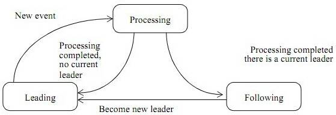

Java并发实战
参考 [1] Java并发编程实战, 2011。
基础
进程与线程的关系
- 进程是资源分配的基本单位；
- 线程是调度的基本单位；
线程的优势
- 充分利用多核资源，更优的性能：
-
单核：可以通过CPU和IO并行方式，在IO阻塞时，另一线程执行计算，获取更高的吞吐率。
-
建模的简单性：
- 将复杂且异步的工作流进一步分解为一组简单并且同步的工作流；
- 异步事件的简化处理：
线程的风险
- 安全性问题，如多线程递增；
- 活跃性问题，如死锁、饥饿、活锁；
- 性能问题，如线程调度的开销（频繁的上下文切换），保存和恢复执行上下文时丢失局部性；
线程安全性
无状态对象一定是线程安全的。
要保证状态的一致性，就需要在单个原子操作中更新所有相关的状态变量。
竞态条件
竞态条件：不恰当的执行时序而出现不正确的结果。
- 先检查后执行（Check-Then-Act）；
数据竞争：在访问共享的非final类型的域时没有采用同步来进行协同；
内置锁
每个Java对象可以用作一个实现同步的锁，称为内置锁（Intrinsic Lock）或监视器锁（Monitor Lock）。
// 父类的synchronized方法和子类的synchronized方法，锁的是同一个对象；
public class Widget {
public synchronized void doSomething() {...}
}
public class LoggingWidget extends Widget {
public synchronized void doSomething() {
System.out.println();
super.doSomething();
}
}
重入意味着获取锁的粒度是”线程“，而不是”调用“。
- 区别于POSIX线程pthread互斥体的默认加锁行为；
对象的共享
可见性
指令重排序
在没有同步的情况下，编译器、处理器以及运行时等都可能对操作的执行顺序进行调整。
- 由于指令重排，可能是先执行3，再执行 => holder有值了，但是n还没有被构造函数初始化；
// 不安全的发布
public Holder holder;
public void initialize() {
// 实际执行的底层操作，1. 分配空间，2.执行构造函数，3. 引用赋值
holder = new Holder(42);
}
public class Holder {
private int n;
public Holder(int n){
this.n=n;
}
public void assertSanity(int n){
if(n!=this.n){
throw new AssertionError(""); // 第一次读取到失效值，第二次读到更新值
}
}
}
-
即使某个对象的引用对其他线程是可见的，并不意味着对象状态对于使用该对象的线程一定可见；
-
final修饰的情况，则保证n可以被看到；Java内存模型对不可变对象的共享提供特殊的初始化安全性保证：
JLS 17.5
An object is considered to be completely initialized when its constructor finishes. A thread that can only see a reference to an object after that object has been completely initialized is guaranteed to see the correctly initialized values for that object's
finalfields.
synchronized
- 原子性（或确定临界区）
- 内存可见性；
线程安全的可变整数类，仅对set方法进行同步是不够的，调用get的线程仍然可能看到失效值。
@ThreadSafe
public class SynchronizedInteger {
@GuardedBy("this") private int value;
public synchronized int get() { return value;}
public synchronized void set(int value) { this.value = value;}
}
volatile
只保证可见性，不保证原子性
- 编译器和运行时注意该变量时共享的，不会将该变量上的操作和其它内存操作一起重排序；
- volatile变量不会被缓存在寄存器或者对其它处理器不可见的地方；
- 不会执行加锁，即不会阻塞，因此比关键字synchronized更轻量级；
- 适用于一写多读，或者单纯的多线程赋值的情况（仅适用于Java）。
非原子的64位操作
- Java内存模型要求，变量的读取操作和写入操作都必须是原子操作，但对于非volatile类型的long和double类型，JVM允许将64位的读或写操作分解为32位的操作。
锁的内存语义
？TODO JVM How to do that ?（MonitorEnter/MonitorExit）
- 当线程获取锁时, JMM会把线程对应的本地内存置为无效. 从而使得被监视器保护的临界区的变量必须从主内存中读取.
- 当线程释放锁时, JMM会把该线程对应的本地内存中的共享变量刷新到主内存中(并不是不释放锁就不刷新到主内存, 只是释放锁时把未刷新到主内存中的数据刷新到主内存).
逸出
不要在构造函数中使this引用逸出。
- TODO：具体啥危害？
线程封闭
将数据访问限定在单个线程中
- 局部变量和ThreadLocal；
- ThreadLocal降低代码的可重用性，并且在类之间引入了隐含的耦合性，小心使用；
不变性
不可变对象
- 对象创建后状态不能修改；
- 对象所有域都是final类型；（或者基于不可变的状态）
- 对象正确创建（创建期间没有this引用溢出）
技巧：volatile和不可变对象实现线程安全(TODO)
安全发布
要安全发布一个对象，对象的引用以及对象的状态必须同时对其他线程可见（重排序带来引用和状态的不一致）。
正确构造的对象可以通过以下的方式来安全发布：
- 在静态初始化函数中初始化一个对象引用；
- 将对象的引用保存到volatile类型的域或者AtomicReference对象中；
- 将对象的引用保存到某个正确构造对象的final类型域中；
- 将对象的引用保存到一个有锁保护的域中；
对象的组合
不希望对每一次内存访问都进行分析以确保程序是线程安全的，而是希望将一些现有的线程安全组件组合为更大规模的组件或程序。
设计线程安全的类
设计安全的类过程中，三大要素：
- 找出构成对象状态的所有变量；
- 找出约束状态变量的不变性条件；
- 建立对象状态的并发访问管理策略；
收集同步需求
对象与变量都有一个状态空间（即所有的可能取值），约束条件需要增加额外的同步和封装：
- 不可变条件：判断状态是否有效，比如计数器不可能是负数、上下界的约束；
- 后验条件：下一个状态依赖当前状态，比如计数器的自增；
依赖状态的操作
基于状态的先验条件：
- 某个操作中包含有基于状态的先验条件，如不能从空队列移除元素；
- 在并发程序中需要等到先验条件为真（先验条件可能由于其他线程的修改而为真），再执行操作；
状态的所有权
状态变量的所有者将决定采用何种加锁协议来维持变量状态的完整性。
- 如果发布某个可变对象的引用，则不再拥有独占的控制权，最多时“共享控制权”；
实例封闭
封装简化了线程安全类的实现过程，提供一种实例封闭机制（Instance Confinement）。
- 将数据封装在对象内部，将数据的访问限制在对象的方法上；
使用私有的锁对象而不是对象的内置锁或者可以被公有方式访问的锁，因为内置锁（Synchronized）客户代码可以获取。
如果一个类有多个独立且线程安全的状态变量组成，并且在所有操作都不含无效状态转换，则线程安全性可以委托给底层的状态变量。
线程安全性的委托
多个线程安全的对象，组合成一个对象时（将线程安全行委托为多个状态变量），其线程安全性：
- 多个状态变量是相互独立的，组合的类不会再其包含的多个状态变量上增加任何不变性条件，如鼠标监听器和键盘监听器组成的监听器；
- 状态变量间存在依赖关系，则需要额外的同步机制，如用两个AtomInteger组成的Ranger类；
现有的线程安全类添加功能
如何扩展现有的线程安全类，添加额外的功能：
- "扩展"方法比直接将代码添加到类中更加脆弱，因为依赖的底层同步策略可能会发生变化；
- 为现有的类添加原子操作时，通过组合模式可以跟底层解耦，外层增加一层额外的加锁（底层现有的类不存在竞争）。
同步策略文档化
在文档中说明客户代码需要了解的线程安全性保证，以及代码维护人员需要了解的同步策略；
基础构建模块（TODO）
Java平台类库中并发基础构建模块。
任务执行
无限制创建线程的不足：
- 线程生命周期的开销非常高：Java的线程会映射到OS的线程，需要JVM和操作系统提供一些辅助操作；
- 资源消耗：活跃的线程会消耗系统资源，特别是内存，造成GC压力。且大量线程在竞争CPU资源时会产生性能开销。
Leader-Follow Pattern：

上图就是L/F多线程模型的状态变迁图，共6个关键点：
（1）线程有3种状态：领导leading，处理processing，追随following
（2）假设共N个线程，其中只有1个leading线程（等待任务），x个processing线程（处理），余下有N-1-x个following线程（空闲）
（3）有一把锁，谁抢到就是leading
（4）事件/任务来到时，leading线程会对其进行处理，从而转化为processing状态，处理完成之后，又转变为following
（5）丢失leading后，following会尝试抢锁，抢到则变为leading，否则保持following
（6）following不干事，就是抢锁，力图成为leading
DelayQueue：
- 管理一组Delayed对象，每个对象都有一个相应的延迟时间；
-
只有某个元素逾期后，DelayQueue中才能执行take操作；
-
Leader-Follow Pattern的变体，用于最小化不必要的定时等待。
- 当一个线程成为领导者时，它只等待下一个延迟过去，而其他线程则无限期地等待。
- 在从take（）或poll（…）返回之前，前导线程必须向其他线程发送信号，除非其他线程在此期间成为领导者。
- 每当队列的头被一个过期时间较早的元素替换时，leader字段就会被重置为null而失效，并且一些等待的线程（不一定是当前的leader）会收到信号。
- 因此，等待线程必须做好准备，在等待过程中获得并失去领导力。
CompletionService
ExecutorCompletionService：提交任务，并且提供take操作，可以获取完成的任务；
取消与关闭
任务取消
- Java没有提供任何机制来安全地终止线程；
中断
- 只有实现线程中断策略的代码才可以屏蔽中断请求，在常规的任务和库代码中都不应该屏蔽中断请求；
不可中断的阻塞：
- java.io中的同步Socket I/O：通过关闭底层的套接字，
read/write方法阻塞的线程会抛出SocketException； - 可以重写
ThreadPoolExecutor的newTaskFor方法，实现Socket的中断； - java.io中同步I/O：线程阻塞在
InterruptibleChannel的IO上 - 中断时抛出
ClosedByInterruptException异常（设置中断状态）； - 关闭时，会抛出
AsynchronousCloseException； - Selector中的I/O：
Selector.select方法阻塞时，调用close/wakeup方法会使线程抛出ClosedSelectorException并提前返回； - 获取某个锁：线程由于等待某个内置锁而阻塞，则无法响应中断，可以通过
lockInterruptibly方法响应中断；
停止基于线程的服务
应用拥有服务，服务拥有工作者线程，但是应用不能拥有工作者线程：
- 服务应该提供生命周期方法（Lifecycle method）来关闭它自己以及它所拥有的线程。
”毒丸“（Poison Pill）：当得到这个对象时，立即停止：
- 在生产者和消费者已知的情况下，才可以使用”毒丸“对象；
- 只有在无界队列中，“毒丸”对象才能可到工作；
ExecutorService的shutdownNow的局限：
-
尝试取消正在执行的任务，返回所有已提交但尚未开始的任务，但无法通过常规方法找出哪些任务已开始但尚未结束；
-
通过在代码中捕获中断的形式，进行已开始但未结束的任务的保存；
try {
runnable.run();
} finally {
if (isShutDown && Thread.currentThread().isInterrupted()) {
taskCancelledAtShutdown.add(runnable);
}
}
-
"误报"：在任务执行最后一条指令以及线程池将任务记录为“结束”的两个时刻之间，线程池被关闭：
-
确保任务是“幂等”的，可以安全地重试；
处理非正常终止的线程
ExecutorService 未捕获异常的处理：
-
统一通过
try-catch封装运行代码，构成Runnable或者Callable；或者重写afterExecute方法； -
execute方法： - 将抛出异常交给未捕获异常处理器，通过自定义ThreadFactory创建ThreadPoolExecutor；
submit方法：- 无论抛出已检查还是未检异常，都会认为是任务返回状态的一部分（因为submit，通过
newTaskFor封装执行逻辑，捕获异常）； - 任务由于异常而结束，异常会被封装到Future.get封装在ExecutionException中重新抛出；
JVM关闭
关闭钩子
正常关闭
- 当最后一个“正常（非守护）”线程结束后，或者当调用
System.exit()时，或者通过其它特定于平台的方法关闭（如发送SIGINT或者CTRL-C）；
关闭钩子（Shutdown Hook）：Runtime.addshutdownHook
- JVM不保证关闭钩子的调用顺序；
- 当关闭应用程序线程时，如果有线程（守护/非守护）仍在运行，则这些线程会跟关闭进程并发执行；
- JVM不会停止或者中断任何在关闭时仍然运行的应用程序线程，当JVM最终结束时，这些线程才会被强行结束；
- 关闭钩子需要是线程安全：访问共享数据必须使用同步机制；
- 关闭钩子不应该对应用程序的状态（如其他服务是否关闭、所有正常线程是否结束）或JVM的关闭原因做出假设；
- 关闭钩子应该尽快退出；
强行关闭
- 调用
Runtime_halt或者操作系统KILL进程（如发送SIGKILL）； - 只关闭JVM，不会运行关闭钩子；
守护线程
创建线程做些辅助工作，不阻碍JVM的关闭，可以使用守护线程（Daemon Thread）：
- JVM启动时的线程，除了主线程，其它都是守护线程（如GC等）；
- 创建新线程，新线程会继承创建它的线程的守护状态；
守护线程和普通线程的差异：
- 当线程退出时，JVM会检查其它正在运行的线程，如果这些线程都是守护线程，则JVM会正常退出操作；
- 当JVM停止时，所有仍在的守护线程会被抛弃（不会触发
finally代码块，不会执行回卷栈），JVM直接退出；
守护线程：
- 尽可能少用，大多数操作需要进行清理才可以抛弃，特别时守护线程中执行可能包含IO的操作；
- 最好用于执行内部任务，比如周期性地从内存的缓存中移除逾期的数据；
终结器
避免使用终结器
- 大多数情况，使用
finally代码块和显示close方法，比使用终结器更好地管理资源； - 例外：管理对象，且该对象持有的资源是通过本地方法获得的；
线程池的使用
只有当任务都是同类型且相互独立时，线程池的性能才能达到最佳：
- 任务依赖于其它任务时，如果线程池不够大，可能会造成线程饥饿死锁；
设置线程池的大小
- 对于CPU密集型任务，在N个CPU的系统上，当线程池的大小为 N+1 时，通常能实现最优的利用率；
- 对于IO密集型操作，由于线程不会一直执行，因此线程池的规模应该更大。
- 估算任务的等待时间和计算时间的比值：
- 线程池计算公式：\(N_{thread}=N_{cpu}*U_{cpu}*(1+\frac{W}{c})\)
- \(N_{cpu}\)：cpu的个数，\(U_{cpu}\)：cpu的利用率，\(\frac{W}{C}\)：等待时间/计算时间
配置Executor
线程池基本参数：
-
基本大小（core size），最大大小（maximum size ）、存活时间、排队策略、饱和策略、线程工厂
-
通过调节线程池的基本大小和存活时间，可以帮助线程池回收空闲线程占有的资源；
排队策略：
- 无界队列：线程池处理不过来请求，会造成队列无限制增加，最终OOM；
- 有界队列：队列满后的新的任务请求，如何进行处理？
- 同步移交（Synchronous Handoff）：对于很大或者无界的队列，使用SynchronousQueue避免任务排队
- 直接将任务从生产者移交给工作者线程，不需要先放到队列中，再由工作者线程从队列中提取该任务；
- 将元素放到SynchronousQueue中，必须另一个线程正在等待接受这个元素，如果线程池已满，则会被直接拒绝；
- 只有当线程池是无界的或者可以拒绝任务时，SynchronousQueue才有实际价值；
饱和策略：当有界队列填满后，处理新来的任务
- 终止策略(Abort)：默认，抛出未检查的
RejectExecutionException，调用者可以捕获异常并进行处理； - 抛弃（Discard）策略：悄悄抛弃任务；
- 抛弃最旧任务（DiscardOldestPolicy）策略：抛弃下一个将被执行的任务，尝试重新提交新的任务；
- 调用者运行（Caller-Runs）：将某些任务回退到调用者方执行；
线程工厂：自定义ThreadFactory
- 如需要利用安全策略来控制对某些特殊代码库的访问权限，通过
PrivilegedThreadFactory创建出的线程，将与创建工厂的线程具备相同的访问权限；
扩展ThreadPoolExecutor
ThreadPoolExecutor的runWorker执行逻辑如下：
try {
beforeExecute(wt, task);
Throwable thrown = null;
try {
task.run();
} catch (RuntimeException x) {
thrown = x; throw x;
} catch (Error x) {
thrown = x; throw x;
} catch (Throwable x) {
thrown = x; throw new Error(x);
} finally {
afterExecute(task, thrown);
}
} finally {
task = null;
w.completedTasks++;
w.unlock();
}
- 可以扩展
beforeExecute、afterExecute和terminate方法，实现对任务计时的功能；
图形用户界面应用程序
GUI都是单线程的， 用专门的事件分发线程（Event Dispatch Thread，EDT）来处理GUI事件：
- 采用一个专门的线程从队列中抽取事件，并将它们转发到应用程序定义的事件处理器；
- 长时间运行的任务，会阻塞GUI响应，因此需要用单独的后台线程进行处理；
分解模型设计：
- 定义：应用程序中既包含用于表示的数据模型，又包含应用程序特定的数据模型；
- 表型模型被封闭在时间线程中，而其它模型（共享模型）是线程安全，可以由事件线程或应用程序访问；
- 表现模型会注册共享模型的监听器，在更新时得到通知；
- 表现模型接受更新事件时，可以通过共享模型的快照进行更新，如果数据比较多时，可以通过发送增量更新的形式；
避免活跃性危险
案例：哲学家进餐问题。
数据库系统设计中考虑死锁检测和死锁恢复；
- 死锁检测：在表示等待关系的有向图中搜索循环；
- 死锁恢复：选择一个牺牲者放弃锁；
死锁
互相持有对方需要的资源（示例：转账的线程安全实现）
- 多线程需要以一致的顺序获取多个锁：
- 可以通过
System.identityHashCode方法，决定锁的顺序： - 当两个锁的hash值一样时，通过引入第三个锁，避免死锁问题；
- hash出现散列冲突概率很小，因此不会成为性能瓶颈；
- 在持有锁的情况下，调用某个外部方法，需要警惕死锁；
活锁
- 定义：多个相互协作的线程对彼此进行响应从而修改各自的状态，并使任何一线程无法继续执行，发生活锁；
- 消息处理失败，重新放回队列头处理，会一直循环失败，由于错误的恢复机制；
- 发送包冲突，等待相同的时间重试，一直冲突一直重试；
- 解决活锁，在重试机制中引入随机性；
性能与可伸缩性
可伸缩性
性能 = 响应时间 + 吞吐量
可伸缩性：当增加计算资源（例如CPU、内存、存储或者IO带宽）时，程序的吞吐量或者处理能力相应增加；
- 以性能测试为基准，避免不成熟的优化，不要猜测；
Amdahl定律
Amdahl定律：在增加计算资源时，程序在理论上能够实现最高的加速比
\(Speedup \le \frac{1}{F+\frac{1-F}{N}}\)
- F 表示串行部分所占的比例，N 表示处理器的个数；
评估一个算法，考虑算法在数百个或者数千个处理器的情况下的性能表现，对 可能出现的可伸缩性局限有一定的认知。
线程的开销
上下文切换
- 保存当前线程的执行上下文，将调度的线程的执行上下文切换为当前上下文；
- 会造成缓存缺失，线程需要的数据不在处理器的本地缓存中；
- 调度器为每个可运行的线程分配一个最小的执行时间，即使有许多其它的线程正在等待执行：
- 将上下文切换到开销分配到更多不会中断的执行时间上，提高整体的吞吐量
- 阻塞越多（IO阻塞、锁获取，条件变量等待），与计算密集型的程序发生越多的上下文切换，增加调度开销，降低吞吐量；
- 大多数的通用的处理器中，上下文切换的开销相当于5000~10000个时钟周期，即几微妙；
vmstat命令可以查看上下文切换次数和内核执行时间比例：- 内核占用率比较高（>10%），表示调度活动发生频繁，可能由于IO或者锁竞争导致的阻塞引起；
内存同步
同步操作的性能开销：
可见性保证（如synchronized和volatile）：内存栅栏
- 刷新缓存，使缓存无效，刷新硬件的写缓存，以及停止执行管道；
- 抑制编译器优化操作，如禁止重排序等；
无竞争的同步：如volatile ，消耗 20 ~ 250个时钟周期；
- 编译器优化锁竞争：如逃逸分析锁是否只由当前线程获取；锁粒度粗化；
阻塞
非竞争的同步可以完全在JVM中实现，而竞争的同步需要操作系统的介入，增加开销。
锁竞争时，竞争失败的线程会阻塞：
- 自旋等待或者OS阻塞挂起线程：取决于上下文切换的开销以及在成功获取锁之前需要等待的时间；
减少锁的竞争
在并发程序中，对可伸缩性的最主要的威胁就是独占方式的资源锁。
降低锁的竞争程度：
- 减少锁的持有时间；
- 缩小锁的范围
- 降低锁的请求频率；
- 锁分解：多个相互独立的锁保护多个独立的状态变量；
- 锁分段：对一组独立的对象上的锁进行分解，如ConcurrentHashMap；
- 将反复计算结果缓存，引入“热点域”，比如Map的size方法；
- “热点域”可扩展性的瓶颈，采用分段枚举（每个段都存本身的size）；
- 使用带有协调机制的独占锁，允许更好的并发性；
- 使用并发容器、读写锁、不可变对象或者原子对象等 ；